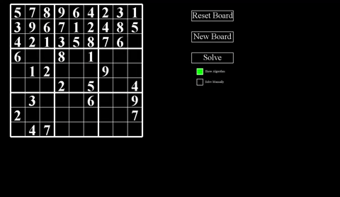

At this point in time I was a sophmore in college,
and I was thinking of things that I knew were weaknesses for me
so that I could focus on improving in those places. One of those
topics for me was function recursion (i.e. when a function or method
calls itself). It was a topic that myself and many others
seemed to have a hard time wrapping our heads around. So I took to the
internet like most college students do looking for inspiration on how
I might be able to improve on this subject. I ended up coming
across an interesting project that talked about making a sudoku solver with
function recursion. Right then I decided I wanted to make one for myself too!
My approach
I knew that when approaching this project I would have to think a little
outside of my comfort zone because I was working with concepts and
practices that were foreign for me. I knew that the real bulk of
work, when it came to the actual solving of the sudoku puzzle, would be
contained in one function. Then that function would be what called itself
recursively, ultimately solving the puzzle. But before I really tackled
that function I knew I needed to lay some ground work. I needed something
that represented my sudoku puzzle behind the scenes. I decided to go with
an object oriented approach and make a "Board" class as well as a "Cell" class.
The Board object would be responsible for creating the sudoku puzzle via a two
dimensional array of cell objects as well as managing the puzzle entirely. I wanted
the end goal for solving a board to simply look like "Board.solve()". I also wanted some
way to visualize the Board so I decided to go with what Pygame as the library I'd use to
do that since it was what I knew the best at the time.
Finally after all the preliminary work was finish I could get to work on my solve function.
Before I actually wrote any lines of code I wanted some kind of outline so I knew what the
function needed. I landed on two core things the function needed to accomplish:
1. Keep track of the current row and column (i.e. "active cell") appropriately
2. Try placing a number into the active cell and see if that placement is valid
These two goals are definitely a bit broad, but, as an example, if the currently active cell
was a cell that had a number given from the start then that cell would need to be skipped.
Another example would be if we wanted to place, say, a number 5 into the active cell then the board would need
to check to see if that was a valid placement based on the rules of sudoku. And if you're not familiar
with the rules of sudoku there are three main criteria; a number cannot be repeated in a row,
column, or the 3x3 subsection within the board. Eventually after a fair bit of trial and error I landed on
these two function as my solve and validSpot. I ended up abstracting the constraint checking into
its own function so that it didnt overly clutter the easy to read goal I had for the solve function.
Challenges Faced and Things Learned
For me the biggest challenge on this project was forcing myself to think
differently thank I normally do. The whole idea of function recursion made sense to me
practically, but in use it could get very confussing once a function has recurssed on itself
hundreds of times. But taking the extra time to think about these concepts and how to work
with them really helped. So much so that one of the most difficult pre-loaded sudoku boards
that I have in my programe recursively calls the solve function over 35,000 times. All in all
this project helped me as just a general programmer but also in specifically targeted areas as
well.
How to check out the project?
The project with all the source code is up on my GitHub for you to download if you'd like to check it out!